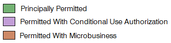

Retail Cannabis Permits
Submitted
On Hold
Processing
Approved
Medical Cannabis Dispensaries
Existing MCDs
Schools
Schools K-12
NOTE: These map layers include 600ft
buffers around the subject property.
